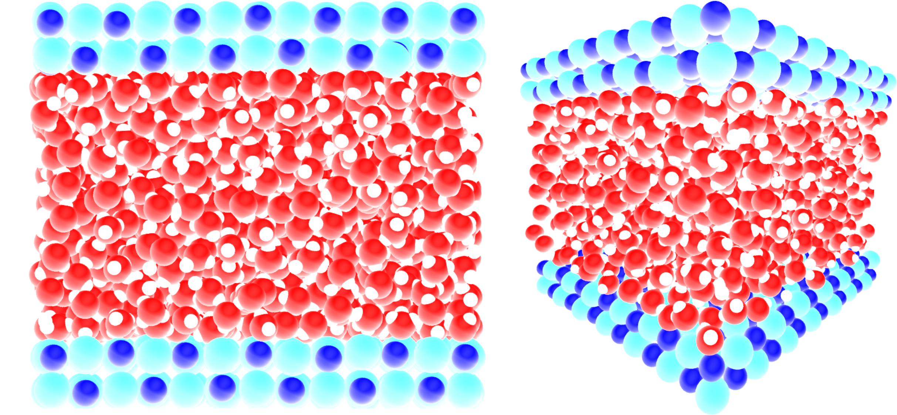
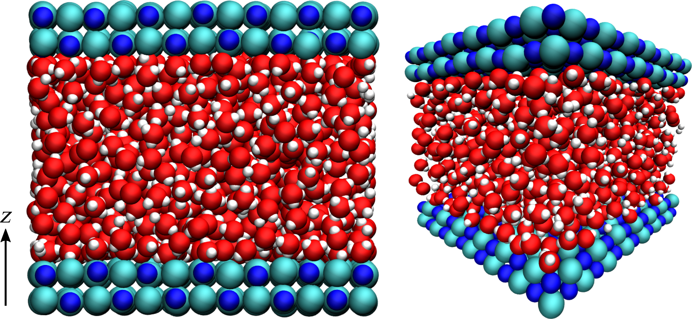

Note
Go to the end to download the full example code.
Usage - Python interpreter¶
To follow this tutorial, it is assumed that MAICoS has been installed on your computer.
MAICoS heavily depends on the MDAnalysis infrastructure for trajectory loading and atom selection. Here we will only cover a small aspects of the capabilities of MDAnalysis. If you want to learn more about the library, take a look at their documentation.
Only three MAICoS analysis modules are used in this tutorial
maicos.DensityPlanar, maicos.VelocityPlanar and
maicos.DiporderPlanar but all modules follow the same structure:
load your simulation data into an
MDAnalysis.core.universe.Universedefine analysis parameters like bin width or the direction of the analysis
after the analysis was succesful, access all results in a
MDAnalysis.analysis.base.Resultsof the analysis object.
Note that some of the calculations may contain pitfall, such as dielectric profiles calculation. Potential pitfalls and best practices are listed in the How-to guides section.
To start, let us first import Matplotlib, MDAnalysis and MAICoS
import logging
import sys
import matplotlib.pyplot as plt
import MDAnalysis as mda
import maicos
Load Simulation Data¶
For this tutorial we use a system consisting of a 2D slab with 1176 water molecules confined in a 2D slit made of NaCl atoms, where the two water/solid interfaces are normal to the axis \(z\) as shown in the snapshot below:
 An acceleration \(a = 0.05\,\text{nm}\,\text{ps}^{-2}\) was applied to the water molecules in the \(\boldsymbol{e}_x\) direction parallel to the NaCl wall, and the atoms of the wall were maintained frozen along \(\boldsymbol{e}_x\).
We first create an MDAnalysis.core.universe.Universe by loading a topology
and trajectory from disk. You can download the topology
and the trajectory from our website.
u = mda.Universe("slit_flow.tpr", "slit_flow.trr")
Let us print a few information about the trajectory:
print(f"Number of frames in the trajectory is {u.trajectory.n_frames}.")
timestep = round(u.trajectory.dt, 2)
print(f"Time interval between two frames is {timestep} ps.")
total_time = round(u.trajectory.totaltime, 2)
print(f"Total simulation time is {total_time} ps.")
Number of frames in the trajectory is 201.
Time interval between two frames is 10.0 ps.
Total simulation time is 2000.0 ps.
Now, we define four atom groups containing repectively:
the oxygen and the hydrogen atoms (of the water molecules),
the oxygen atoms (of the water molecules),
the hydrogen atoms (of the water molecules),
the Na and Cl atoms (of the wall):
group_H2O = u.select_atoms("type OW HW")
group_O = u.select_atoms("type OW")
group_H = u.select_atoms("type HW")
group_NaCl = u.select_atoms("type SOD CLA")
Let us print a few information about the groups
print(f"Number of water molecules is {group_O.n_atoms}.")
print(f"Number of NaCl atoms is {group_NaCl.n_atoms}.")
Number of water molecules is 1176.
Number of NaCl atoms is 784.
Density Profiles¶
Let us use the maicos.DensityPlanar class to extract the density profile of
the group_H2O along the (default) \(z\) axis by running the analysis:
dplan = maicos.DensityPlanar(group_H2O).run()
The warning starting with Unwrapping is perfectly normal and can be ignored for now.
Let us extract the bin coordinates \(z\) and the averaged density profile from the
results attribute:
The density profile is given as a 1D array, let us look at the 10 first lines:
print(dens[:10])
[0.00000000e+00 0.00000000e+00 0.00000000e+00 0.00000000e+00
0.00000000e+00 2.91778321e-05 3.26228275e-01 9.99460390e-01
5.32837124e-01 5.64829866e-01]
By default the bin_width is 1 Å, and the unit is atomic mass per \(Å^3\)
(\(\text{u}/\text{Å}^3\)).
Let us plot the density profile using Matplotlib:
fig, ax = plt.subplots()
ax.plot(zcoor, dens)
ax.set_xlabel(r"z coordinate ($\rm Å$)")
ax.set_ylabel(r"density H2O ($\rm u \cdot Å^{-3}$)")
fig.show()
Uncertainity estimates¶
MAICoS estimates the uncertainity for each profile. This uncertainity is stored inside the dprofile attribute.
uncertainity = dplan.results.dprofile
# Let us plot the results also showing the uncertainities
fig, ax = plt.subplots()
ax.errorbar(zcoor, dens, 5 * uncertainity)
ax.set_xlabel(r"z coordinate ($\rm Å$)")
ax.set_ylabel(r"density H2O ($\rm u \cdot Å^{-3}$)")
fig.show()
For this example we scale the error by 5 to be visible in the plot.
The uncertainity estimatation assumes that the trajectory data is uncorraleted. If the correlation time is too high or not reasonably computable a warning occurs that the uncertainity estimatation might be unreasonable.
maicos.DensityPlanar(group_H2O).run(start=10, stop=13, step=1)
/home/runner/work/maicos/maicos/src/maicos/core/base.py:510: UserWarning: Your trajectory is too short to estimate a correlation time. Use the calculated error estimates with caution.
self.corrtime = correlation_analysis(self.timeseries)
<maicos.modules.densityplanar.DensityPlanar object at 0x7effad301bd0>
Improving the Results¶
By changing the value of the default parameters, one can improve the results, and perform more advanced operations.
Let us increase the spatial resolution by reducing the bin_width, and extract two
profiles instead of one:
one for the oxygen atoms of the water molecules,
one from the hydrogen atoms:
dplan_smaller_bin = []
for ag in [group_O, group_H]:
dplan_smaller_bin.append(
maicos.DensityPlanar(ag, bin_width=0.5, unwrap=False).run()
)
# TODO(@PicoCentauri): Intoduce AnalysisCollection here?
zcoor_smaller_bin_O = dplan_smaller_bin[0].results.bin_pos
dens_smaller_bin_O = dplan_smaller_bin[0].results.profile
zcoor_smaller_bin_H = dplan_smaller_bin[0].results.bin_pos
dens_smaller_bin_H = dplan_smaller_bin[0].results.profile
Let us plot the results using two differents \(y\)-axis:
fig, ax1 = plt.subplots()
ax1.plot(zcoor_smaller_bin_O, dens_smaller_bin_O, label=r"Oxygen")
ax1.plot(zcoor_smaller_bin_H, dens_smaller_bin_H * 8, label=r"Hydrogen")
ax1.set_xlabel(r"z coordinate ($Å$)")
ax1.set_ylabel(r"density O ($\rm u \cdot Å^{-3}$)")
ax2 = ax1.twinx()
ax2.set_ylabel(r"density H ($\rm u \cdot Å^{-3}$)")
ax1.legend()
fig.show()
Access to all the Module’s Options¶
For each MAICoS module, they are several parameters similar to bin_width. The
parameter list and default options are listed in the module’s documentation, and can be gathered by calling the help function of Python:
help(maicos.DensityPlanar)
Help on class DensityPlanar in module maicos.modules.densityplanar:
class DensityPlanar(maicos.core.planar.ProfilePlanarBase)
| DensityPlanar(
| atomgroup: MDAnalysis.core.groups.AtomGroup,
| dens: str = 'mass',
| dim: int = 2,
| zmin: float | None = None,
| zmax: float | None = None,
| bin_width: float = 1,
| refgroup: MDAnalysis.core.groups.AtomGroup | None = None,
| sym: bool = False,
| grouping: str = 'atoms',
| unwrap: bool = True,
| pack: bool = True,
| bin_method: str = 'com',
| output: str = 'density.dat',
| concfreq: int = 0,
| jitter: float = 0.0
| ) -> None
|
| Cartesian partial density profiles.
|
| Calculations are carried out for ``mass``
| :math:`(\rm u \cdot Å^{-3})`, ``number`` :math:`(\rm Å^{-3})`, partial ``charge``
| :math:`(\rm e \cdot Å^{-3})` or electron :math:`(\rm e \cdot Å^{-3})` density
| profiles
| along certain cartesian axes ``[x, y, z]`` of the simulation
| cell.
| Cell dimensions are allowed to fluctuate in time.
|
| For grouping with respect to ``molecules``, ``residues`` etc., the corresponding
| centers (i.e., center of mass), taking into account periodic boundary conditions,
| are calculated. For these calculations molecules will be unwrapped/made whole.
| Trajectories containing already whole molecules can be run with ``unwrap=False`` to
| gain a speedup. For grouping with respect to atoms, the ``unwrap`` option is always
| ignored.
|
| For the correlation analysis the central bin
| (:math:`N / 2`) of the 0th's group profile is used. For further information on the correlation analysis please
| refer to :class:`AnalysisBase <maicos.core.base.AnalysisBase>` or the
| :ref:`general-design` section.
|
| Parameters
| ----------
| atomgroup : MDAnalysis.core.groups.AtomGroup
| A :class:`~MDAnalysis.core.groups.AtomGroup` for which the calculations are
| performed.
| unwrap : bool
| When :obj:`True`, molecules that are broken due to the periodic boundary conditions
| are made whole.
|
| If the input contains molecules that are already whole, speed up the calculation by
| disabling unwrap. To do so, use the flag ``-no-unwrap`` when using MAICoS from the
| command line, or use ``unwrap=False`` when using MAICoS from the Python interpreter.
|
| Note: Molecules containing virtual sites (e.g. TIP4P water models) are not currently
| supported in MDAnalysis. In this case, you need to provide unwrapped trajectory
| files directly, and disable unwrap. Trajectories can be unwrapped, for example,
| using the ``trjconv`` command of GROMACS.
| pack : bool
| When :obj:`True`, molecules are put back into the unit cell. This is required
| because MAICoS only takes into account molecules that are inside the unit cell.
|
| If the input contains molecules that are already packed, speed up the calculation by
| disabling packing with ``pack=False``.
| refgroup : MDAnalysis.core.groups.AtomGroup
| Reference :class:`~MDAnalysis.core.groups.AtomGroup` used for the calculation. If
| ``refgroup`` is provided, the calculation is performed relative to the center of
| mass of the AtomGroup. If ``refgroup`` is :obj:`None` the calculations are performed
| with respect to the center of the (changing) box.
| jitter : float
| Magnitude of the random noise to add to the atomic positions.
|
| A jitter can be used to stabilize the aliasing effects sometimes appearing when
| histogramming data. The jitter value should be about the precision of the
| trajectory. In that case, using jitter will not alter the results of the histogram.
| If ``jitter = 0.0`` (default), the original atomic positions are kept unchanged.
|
| You can estimate the precision of the positions in your trajectory with
| :func:`maicos.lib.util.trajectory_precision`. Note that if the precision is not the
| same for all frames, the smallest precision should be used.
| concfreq : int
| When concfreq (for conclude frequency) is larger than ``0``, the conclude function
| is called and the output files are written every ``concfreq`` frames.
| dim : {0, 1, 2}
| Dimension for binning (``x=0``, ``y=1``, ``z=1``).
| zmin : float
| Minimal coordinate for evaluation (in Å) with respect to the center of mass of the
| refgroup.
|
| If ``zmin=None``, all coordinates down to the lower cell boundary are taken into
| account.
| zmax : float
| Maximal coordinate for evaluation (in Å) with respect to the center of mass of the
| refgroup.
|
| If ``zmax = None``, all coordinates up to the upper cell boundary are taken into
| account.
| bin_width : float
| Width of the bins (in Å).
| sym : bool
| Symmetrize the profile. Only works in combination with ``refgroup``.
| grouping : {``"atoms"``, ``"residues"``, ``"segments"``, ``"molecules"``, ``"fragments"``}
| Atom grouping for the calculations.
|
| The possible grouping options are the atom positions (in the case where
| ``grouping="atoms"``) or the center of mass of the specified grouping unit (in the
| case where ``grouping="residues"``, ``"segments"``, ``"molecules"`` or
| ``"fragments"``).
| bin_method : {``"com"``, ``"cog"``, ``"coc"``}
| Method for the position binning.
|
| The possible options are center of mass (``"com"``), center of geometry (``"cog"``),
| and center of charge (``"coc"``).
| output : str
| Output filename.
| dens : {``"mass"``, ``"number"``, ``"charge"``, ``"electron"``}
| density type to be calculated.
|
| Attributes
| ----------
| results.bin_pos : numpy.ndarray
| Bin positions (in Å) ranging from ``zmin`` to ``zmax``.
| results.profile : numpy.ndarray
| Calculated profile.
| results.dprofile : numpy.ndarray
| Estimated profile's uncertainity.
|
| Notes
| -----
| Partial mass density profiles can be used to calculate the ideal component of the
| chemical potential. For details, take a look at the corresponding :ref:`How-to
| guide<howto-chemical-potential>`.
|
| Method resolution order:
| DensityPlanar
| maicos.core.planar.ProfilePlanarBase
| maicos.core.planar.PlanarBase
| maicos.core.base.AnalysisBase
| maicos.core.base._Runner
| MDAnalysis.analysis.base.AnalysisBase
| maicos.core.base.ProfileBase
| builtins.object
|
| Methods defined here:
|
| __init__(
| self,
| atomgroup: MDAnalysis.core.groups.AtomGroup,
| dens: str = 'mass',
| dim: int = 2,
| zmin: float | None = None,
| zmax: float | None = None,
| bin_width: float = 1,
| refgroup: MDAnalysis.core.groups.AtomGroup | None = None,
| sym: bool = False,
| grouping: str = 'atoms',
| unwrap: bool = True,
| pack: bool = True,
| bin_method: str = 'com',
| output: str = 'density.dat',
| concfreq: int = 0,
| jitter: float = 0.0
| ) -> None
| Initialize self. See help(type(self)) for accurate signature.
|
| ----------------------------------------------------------------------
| Readonly properties inherited from maicos.core.planar.PlanarBase:
|
| odims
| Other dimensions perpendicular to dim i.e. (0,2) if dim = 1.
|
| ----------------------------------------------------------------------
| Methods inherited from maicos.core.base.AnalysisBase:
|
| run(
| self,
| start: int | None = None,
| stop: int | None = None,
| step: int | None = None,
| frames: int | None = None,
| verbose: bool | None = None,
| progressbar_kwargs: dict | None = None
| ) -> Self
| Iterate over the trajectory.
|
| savetxt(self, fname: str, X: numpy.ndarray, columns: list[str] | None = None) -> None
| Save to text.
|
| An extension of the numpy savetxt function. Adds the command line input to the
| header and checks for a doubled defined filesuffix.
|
| Return a header for the text file to save the data to. This method builds a
| generic header that can be used by any MAICoS module. It is called by the save
| method of each module.
|
| The information it collects is:
| - timestamp of the analysis
| - name of the module
| - version of MAICoS that was used
| - command line arguments that were used to run the module
| - module call including the default arguments
| - number of frames that were analyzed
| - atomgroup that was analyzed
| - output messages from modules and base classes (if they exist)
|
| ----------------------------------------------------------------------
| Readonly properties inherited from maicos.core.base.AnalysisBase:
|
| box_center
| Center of the simulation cell.
|
| box_lengths
| Lengths of the simulation cell vectors.
|
| ----------------------------------------------------------------------
| Data descriptors inherited from maicos.core.base._Runner:
|
| __dict__
| dictionary for instance variables
|
| __weakref__
| list of weak references to the object
|
| ----------------------------------------------------------------------
| Class methods inherited from MDAnalysis.analysis.base.AnalysisBase:
|
| get_supported_backends()
| Tuple with backends supported by the core library for a given class.
| User can pass either one of these values as ``backend=...`` to
| :meth:`run()` method, or a custom object that has ``apply`` method
| (see documentation for :meth:`run()`):
|
| - 'serial': no parallelization
| - 'multiprocessing': parallelization using `multiprocessing.Pool`
| - 'dask': parallelization using `dask.delayed.compute()`. Requires
| installation of `mdanalysis[dask]`
|
| If you want to add your own backend to an existing class, pass a
| :class:`backends.BackendBase` subclass (see its documentation to learn
| how to implement it properly), and specify ``unsupported_backend=True``.
|
| Returns
| -------
| tuple
| names of built-in backends that can be used in :meth:`run(backend=...)`
|
|
| .. versionadded:: 2.8.0
|
| ----------------------------------------------------------------------
| Readonly properties inherited from MDAnalysis.analysis.base.AnalysisBase:
|
| parallelizable
| Boolean mark showing that a given class can be parallelizable with
| split-apply-combine procedure. Namely, if we can safely distribute
| :meth:`_single_frame` to multiple workers and then combine them with a
| proper :meth:`_conclude` call. If set to ``False``, no backends except
| for ``serial`` are supported.
|
| .. note:: If you want to check parallelizability of the whole class, without
| explicitly creating an instance of the class, see
| :attr:`_analysis_algorithm_is_parallelizable`. Note that you
| setting it to other value will break things if the algorithm
| behind the analysis is not trivially parallelizable.
|
|
| Returns
| -------
| bool
| if a given ``AnalysisBase`` subclass instance
| is parallelizable with split-apply-combine, or not
|
|
| .. versionadded:: 2.8.0
|
| ----------------------------------------------------------------------
| Methods inherited from maicos.core.base.ProfileBase:
|
| save(self) -> None
| Save results of analysis to file specified by ``output``.
Here we can see that for maicos.DensityPlanar, there are several possible
options such as zmin, zmax (the minimal and maximal coordinates to consider),
or refgroup (to perform the binning with respect to the center of mass of a
certain group of atoms).
Knowing this, let us re-calculate the density profile of \(\mathrm{H_2O}\), but
this time using the group group_H2O as a reference for the center of mass:
dplan_centered_H2O = maicos.DensityPlanar(
group_H2O, bin_width=0.5, refgroup=group_H2O, unwrap=False
)
dplan_centered_H2O.run()
zcoor_centered_H2O = dplan_centered_H2O.results.bin_pos
dens_centered_H2O = dplan_centered_H2O.results.profile
Let us also extract the density profile for the NaCl walls, but centered with respect to the center of mass of the \(\mathrm{H_2O}\) group:
dplan_centered_NaCl = maicos.DensityPlanar(
group_NaCl, bin_width=0.5, refgroup=group_H2O, unwrap=False
)
dplan_centered_NaCl.run()
zcoor_centered_NaCl = dplan_centered_NaCl.results.bin_pos
dens_centered_NaCl = dplan_centered_NaCl.results.profile
/home/runner/work/maicos/maicos/src/maicos/lib/math.py:305: RuntimeWarning: invalid value encountered in divide
(1 - np.arange(1, cutoff) / len(timeseries)) * corr[1:cutoff] / corr[0]
/home/runner/work/maicos/maicos/src/maicos/core/base.py:510: UserWarning: Your trajectory does not provide sufficient statistics to estimate a correlation time. Use the calculated error estimates with caution.
self.corrtime = correlation_analysis(self.timeseries)
An plot the two profiles with different \(y\)-axis:
fig, ax1 = plt.subplots()
ax1.plot(zcoor_centered_H2O, dens_centered_H2O, label=r"$\rm H_2O$")
ax1.plot(zcoor_centered_NaCl, dens_centered_NaCl / 5, label=r"$\rm NaCl$")
ax1.set_xlabel(r"z coordinate ($Å$)")
ax1.set_ylabel(r"density O ($\rm u \cdot Å^{-3}$)")
ax1.legend()
ax2 = ax1.twinx()
ax2.set_ylabel(r"density NaCl ($\rm u \cdot Å^{-3}$)")
fig.show()
Additional Options¶
Use verbose=True to display extra informations and a progress bar:
dplan_verbose = maicos.DensityPlanar(group_H2O)
dplan_verbose.run(verbose=True)
0%| | 0/201 [00:00<?, ?it/s]
26%|██▌ | 52/201 [00:00<00:00, 512.80it/s]
52%|█████▏ | 104/201 [00:00<00:00, 515.13it/s]
78%|███████▊ | 156/201 [00:00<00:00, 515.99it/s]
100%|██████████| 201/201 [00:00<00:00, 514.94it/s]
<maicos.modules.densityplanar.DensityPlanar object at 0x7effa3e81310>
MAICoS uses Python’s standard logging library to display additional informations during the analysis of your trajectory. If you also want to show the DEBUG messages you can configure the logger accordingly.
logging.basicConfig(stream=sys.stdout, level=logging.DEBUG)
dplan_verbose.run(verbose=True)
logging.disable(logging.WARNING)
0%| | 0/201 [00:00<?, ?it/s]
25%|██▌ | 51/201 [00:00<00:00, 505.79it/s]
51%|█████ | 103/201 [00:00<00:00, 511.61it/s]
77%|███████▋ | 155/201 [00:00<00:00, 513.61it/s]
100%|██████████| 201/201 [00:00<00:00, 512.38it/s]
For additional options take a look at the HOWTO for the logging library.
To analyse only a subpart of a trajectory file, for instance to analyse only frames 2,
4, 6, 8, and 10, use the start, stop, and step keywords as follow:
dplan = maicos.DensityPlanar(group_H2O).run(start=10, stop=20, step=2)
Velocity Profile¶
Here we use the same trajectory file, but extract the velocity profile instead of the
density profile. Do to so, the maicos.VelocityPlanar is used.
Let us call the velocity module:
tplan = maicos.VelocityPlanar(group_H2O, bin_width=0.5, vdim=0, flux=False).run()
zcoor = tplan.results.bin_pos
vel = tplan.results.profile
0`` option, but the binning is made along the default \(z\) axis.
And plot the velocity profile:
fig, ax = plt.subplots()
ax.axhline(0, linestyle="dotted", color="gray")
ax.plot(zcoor, vel)
ax.set_xlabel(r"z coordinate ($Å$)")
ax.set_ylabel(r"velocity H2O ($Å ps^{-1}$)")
fig.show()
Finally, still using the same trajectory file, we extract the average orientation of the water molecules.
Let us call the maicos.DiporderPlanar to extract the average orientation of
the water molecules:
mydiporder = maicos.DiporderPlanar(
group_H2O, refgroup=group_H2O, order_parameter="cos_theta"
).run()
Then, let us extract the cosinus of the angle of the molecules, \(\cos(\theta)\):
zcoor = mydiporder.results.bin_pos
cos_theta = mydiporder.results.profile
fig, ax = plt.subplots()
ax.axhline(0, linestyle="dotted", color="gray")
ax.plot(zcoor, cos_theta)
ax.set_xlabel(r"z coordinate ($Å$)")
ax.set_ylabel(r"$\cos$($\theta$)")
plt.show()